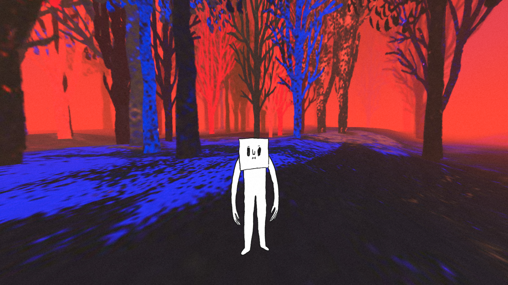

Way to Go
Vincent Morisset, Caroline Robert, Édouard Lanctôt-Benoit and Philippe Lambert
-

-

- 
Experience Now
Description
Way to Go is an interactive experience for human beings between 5 and 105 years old. Maybe it lasts six minutes; maybe it lasts forever. Way to Go is ready for your web browser and willing to go VR, if you’re Rift-y. It is like a gray squirrel balanced on a branch, fearless. Made by Vincent Morisset, Caroline Robert, Édouard Lanctôt-Benoit and the studio AATOAA, visionary creators of BLA BLA and Arcade Fire’s award-winning Just A Reflektor. Produced by the National Film Board of Canada, co-produced by France Televisions, with a mesmerizing soundtrack by Philippe Lambert, it is a game and a solace and an alarm, a wake-up call to the hazards of today. At a moment when we have access to so much, and see so little, Way to Go will remind you of all that lies before you, within you, in the luscious, sudden pleasure of discovery.
Bios
Vincent Morisset is a director and the founder of AATOAA studio. During the last decade, he pioneered interactive videos for Arcade Fire (Neon Bible, Sprawl II, Just a Reflektor). He also directed two feature films, MIROIR NOIR and INNI, a documentary on Sigur Rós. With the support of the NFB, in collaboration with Philippe Lambert, Édouard Lanctôt-Benoit and Caroline Robert, Vincent Morisset directed the award-winning film for computer BLA BLA. His work has been presented at the Museum of the Moving Image, MoMA, Gaîté lyrique, the National Taiwan Museum and at many festivals including Venice, Rotterdam, SXSW and IDFA. Vincent is also the instigator of the Digital Storytelling Manifesto. Way to Go is his latest project.
Born in Montreal, Philippe Lambert is an experimental vocalist and electronic music composer. His recordings have been published on Alien8Recordings, Robosapien Record and Los Discos Enfantasmes. Way to Go is his 3rd interactive project for the National Film Board of Canada, after BLA BLA (2011) and A Journal Of Insomnia (2013). These projects have been presented as interactive installations or musical performances at La Gaîté lyrique (Paris), Mutek (Montréal), IDFA (Amsterdam), Tribeca Film Festival (New York) and DOK Leipzig (Leipzig).
Édouard Lanctôt-Benoit is a creative developer and a technical director specialized in interactive vidéos and installations. He started his career at Moment Factory in Montréal where he worked on various large-scale installations. Since 5 years, he is part of Vincent Morisset’s team at AATOAA, for whom he collaborated to the development and the creation of interactive videos produced, amongst others, by the NFB (BLA BLA, 2011), Arcade Fire (Sprawl II, 2012) and the Google Creative Lab (Just A Reflektor, 2014). His work has been rewarded with prestigious prizes such as the Emmy Awards, Cannes Cyber Lions, South By Southwest and the Webby Awards.
Caroline Robert is an art director and a crafter. For the past eight years, she has been working on all the projects of the studio AATOAA (including BLA BLA, Just a Reflektor and Sprawl II). Also, Caroline has been creating the visual identity for Arcade Fire. She designed the album artwork for Reflektor and « The Suburbs », which won a Grammy award for Best recording package of the year. Her work has been presented at the Museum of the Moving Image, Gaîté lyrique, the National Taiwan Museum and at many festivals including Rotterdam, SXSW, Japan Media Arts Festival and IDFA.
Compatibility
| Chrome | Firefox | Safari | |
|---|---|---|---|
| Desktop | ✔ | ✔ | |
| Mobile | |||
| Oculus | ✔ (Chromium) | ✔ (Nightly) | |
| Vive | ✔ (Chromium) | ✔ (Nightly) |
Note: You may need to do some special setup for your browser to work with a VR headset like the Oculus Rift or HTC Vive.